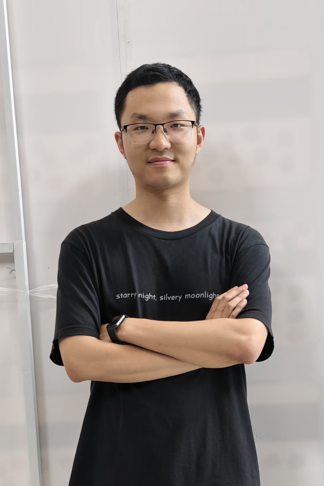

Jiaqing Xie
PhD Student
Email: 26113050148@m.fudan.edu.cn
Research Interests
Spectral Methods, Graph Theory, Approximation Theory, AI for Science
Recent & Upcoming Events
- [Aug. 2026] KDD 2026
Recent & Representative Papers [All Papers]
-
Gauge-Invariant Learnable Spectral Positional Encodings for Directed Graphs via Hermitian Block Krylov Subspaces [arXiv]arXiv Manuscript, 2026 . -
SIGKDD 2026 .